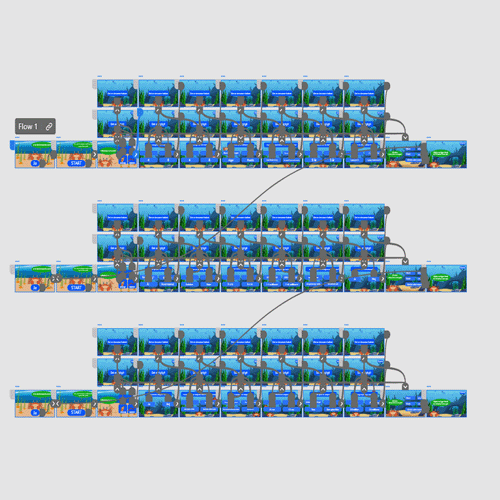
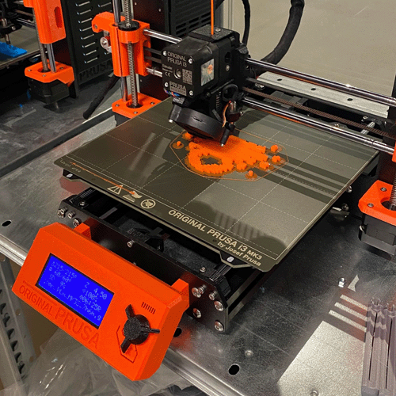

Installation projectThe second larger project we were assigned were to make an installation for the combined tourist attraction and research institution Fjord&Bælt. My group decided on a sensory box which would hold different species of smaller underwater animals which usually hides from open view. The idea is to make the guests of the facility, guess which animal is inside of the box and to then answer a quiz of about it.
 